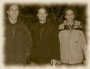
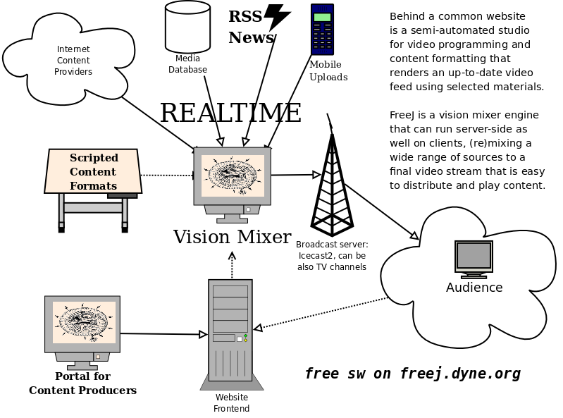

Jaromil's Musings

 printable page
printable page
printable page
printable page
 |
| FreeJ logo by Sciatto Prod. |
Following the motto: set the veejay free! FreeJ is the first GNU GPL "veejay" software, also aiming at a 100% free video plugin framework, together with Fukuchi Kentaro's EffecTV.
FreeJ is a digital instrument for realtime video manipulation used in the fields of dance theater, veejaying, medical visualization and TV.
FreeJ lets you interact with multiple layers of video (images, movies, live cameras and streams, particle generators, text scrollers, flash animations and more), filter them with effect chains and then mix them together.
It can be operated live from a text console and scripted to be controlled by keyboard, midi, OSC and joysticks.
- Interoperable: code can be reused and plugged in applications
- Efficient: faster than usual multimedia frameworks for desktops
- Computes in parallel: designed for multi-threading since the beginning
- Modular: makes use of existing libraries, plugs to different software
- It's 100% FREE: GNU GPL v3, listed in the FSF software directory
|  |
| The FreeJ team at Piksel 2005 in Norway, from left to right: Kysucix, Mr.Goil and Jaromil |
Code included:
- Sam Lantinga (sdl_*)
- FFMpeg video decoders
- Andreas Schiffler (sdl_gfx)
- Jan (theorautils)
- Dave Griffiths (audio bus)
- Nemosoft (ccvt)
- Charles Yates (yuv2rgb)
- Steve Harris (liblo)
- Olivier Debon (flash).

Binary packages are maintained for the main repositories of Debian/Ubuntu, Fedora and more GNU/Linux distributions.
Debian package subdivision:
- freej
- freej-dbg
- freej-doc
- libfreej
- libfreej-dev
- python-freej
- python-freej-dbg
- 100% Free - GNU GPL version 3
- Cross Platform (32/64 bit, big/little endian, ARM support)
- Extensible Layer and Controller API
- Scriptability in Python and Javascript
- OSX support (Native Cocoa/Carbon and QT components)
- Encoding and Streaming support (Ogg/Theora)
- Controllers: Wiimote, Mouse & Joy, OSC, MIDI, serial and text Console
- Highly efficient and documented code with reliable dependencies

|


|


|
 copyleft 2000 - 2009 dyne.org
foundation and respective authors. Verbatim copying
and distribution is permitted in any medium, provided
this notice is preserved.
Send inquiries & questions to dyne.org's hackers. copyleft 2000 - 2009 dyne.org
foundation and respective authors. Verbatim copying
and distribution is permitted in any medium, provided
this notice is preserved.
Send inquiries & questions to dyne.org's hackers.
|

|